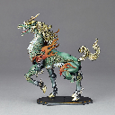
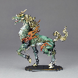

The kirin is a mythical hooved chimerical creature known in Chinese and other East Asian cultures, said to appear with the imminent arrival or passing of a sage or illustrious ruler. It is a good omen thought to occasion prosperity or serenity. It is often depicted with what looks like fire all over its body.
The kirin may be described or depicted in a variety of ways.
Kirin generally have Chinese dragon-like features. Most notably their heads, eyes with thick eyelashes, manes that always flow upward and beards. The body is fully or partially scaled and often shaped like an ox, deer, or horse. They are always shown with cloven hooves. In modern times, the depictions of kirin have often fused with the Western concept of unicorns.
The Chinese dragon has antlers, so it is most common to see kirin with antlers. Dragons in China are also most commonly depicted as golden, therefore the most common depictions of kirin are also golden, but are not limited to just gold, and can be any color of the rainbow, multicolored, and various colors of fur or hide.
The kirin are depicted throughout a wide range of Chinese art also with parts of their bodies on fire, but not always. Sometimes they have feathery features or decorations, fluffy curly tufts of hair like Ming Dynasty horse art on various parts of the legs from fetlocks to upper legs, or even with decorative fish-like fins as decorative embellishments, or carp fish whiskers, or even carp fish-like dragon scales.
Kirin are often depicted as somewhat bejeweled, or as brilliant as jewels themselves, like Chinese dragons. They are often associated in colors with the elements, precious metals, stars, and gem stones. But, kirin can also be earthy and modest browns or earth-tones. It is said their auspicious voice sounds like the tinkling of bells, chimes, and the wind.
According to Taoist mythology, although they can look fearsome, kirin only punish the wicked, thus there are several variations of court trials and judgements based on kirin divinely knowing whether a defendant was good or evil, and guilty or innocent, in ancient lore and stories.
In Buddhist influenced depictions, they will refuse to walk upon grass for fear of harming a single blade, and thus are often depicted walking upon the clouds or the water. As they are divine and peaceful creatures, their diets do not include flesh. They take great care when they walk to never tread on a living creature, and appear only in areas ruled by a wise and benevolent leader, which can include a household. They can become fierce if a pure person is threatened by a malicious one, spouting flames from their mouths and exercising other fearsome powers that vary from story to story.
Legends tell that kirin have appeared in the garden of the legendary Yellow Emperor and in the capital of Emperor Yao. Both events bore testimony to the benevolent nature of the rulers. It has been told in legends that the birth of the great sage Confucius was foretold by the arrival of a kirin.
Kirin are thought to be a symbol of luck, good omens, protection, prosperity, success, and longevity by the Chinese. kirin are also a symbol of fertility, and often depicted in decorations as bringing a baby to a family.